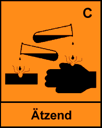

Weißfeinkalk*) (auch Branntkalk oder Ätzkalk genannt) ist der Handelsname für Calciumoxid mit der chemischen Formel CaO.
Es ist ein weißes, geruchloses Pulver, das sich in Wasser unter starker Wärmeentwicklung und Volumenvergrößerung (Quellung) zu einer starken Lauge löst. Weißfeinkalk ist ein schwach wassergefährdender Stoff (WGK 1).

Gefahrensymbol
|
Verursacht Verätzungen (R 34). Bei Berührung mit den Augen gründlich mit Wasser abspülen und Arzt konsultieren (S 26). Bei der Arbeit geeignete Schutzkleidung tragen (S 36). |
––––––––––––––––––––
*) Weißfeinkalk ist feingemahlener, ungelöschter
Branntkalk i. S. von
|
- ENV 459-1:1994 |
Baukalk Teil 1: Definitionen, Anforderungen und Konformitätskriterien |
|
- DIN 1069-1 (März 1995) |
Baukalk Teil 1: Definitionen, Anforderungen, Überwachung |
MAK-Wert:
5 mg/m³, gemessen als Gesamtstaub.
Kurzzeitwert:
Kategorie 1, 10 mg/m³, 5 Minuten Momentanwert, 8-mal pro
Schicht.
Calciumoxid reizt und verätzt die Atemwege, Verdauungswege und Augen, es kann die Haut entzünden und zu tiefgreifenden Gewebszerstörungen führen. Es kann die Hornhaut der Augen bis zur vollständigen Erblindung schädigen.
Durch Einatmen oder Verschlucken des Staubes (z. B. beim Essen, Trinken oder Rauchen mit beschmutzten Händen) kann Calciumoxid in den Körper gelangen und zu Gesundheitsschäden führen.
Einatmen des Staubes verursacht Reizungen und Verätzungen der Atemwege. Erste Anzeichen sind Nies-, Husten- und Tränenreiz, Brennen der Nasen- und Rachenschleimhäute sowie Jucken und Brennen der Haut.
Beim Befüllen von Vorratssilos, beim Umfüllen in Transportsilos und beim Ausbringen können gefährliche Konzentrationen von Weißfeinkalkstaub in der Umgebungsluft auftreten.
- Im Arbeitsbereich keine Lebensmittel aufbewahren.
- Essen, Trinken und Rauchen sind im Arbeitsbereich verboten.
- Staubkontakt mit Augen, Haut und Kleidung vermeiden.
- Nach Arbeitsende und vor jeder Pause Hände gründlich reinigen.
- Nach Arbeitsende Hautpflegemittel verwenden.
- Verunreinigte oder angestaubte Kleidung wechseln, in Wasser legen und erst nach Reinigung wieder benutzen.
- Nach Arbeitsende Kleidung auf jeden Fall wechseln.
- Straßenkleidung getrennt von Arbeitskleidung aufbewahren.
- Bei Bodenstabilisierungsmaschinen, die nach dem 1. Januar 1995 erstmalig in Verkehr gebracht wurden, muß der Fahrerplatz mit einer Kabine ausgerüstet sein, die den Maschinenführer vor Staub schützt.
- Staubentwicklung vermeiden.
- Ausgebrachten Weißfeinkalk nicht unnötig auf dem Boden liegen lassen.
- Waschgelegenheit im Arbeitsbereich vorsehen, z. B. Wasserwagen.
- Augenspülflaschen in der Nähe der Arbeitsplätze bereithalten, z. B. auf Fahrzeugen und Geräten mitführen. Spülflüssigkeit (Wasser) immer gebrauchsfähig halten.
- Mündliche Unterweisung mindestens einmal jährlich durchführen, z. B. mit Hilfe einer Betriebsanweisung. Siehe dazu die Muster-Betriebsanweisung in der Anlage, in der die fehlenden Angaben - z. B. Betrieb", "Baustelle/Tätigkeit", "zuständiger Arzt oder Klinik" usw. - betriebs- und baustellenbezogen einzutragen sind.
Die unterwiesenen Personen bestätigen die Unterweisung mit ihrer Unterschrift.
Augenschutz: Schutzbrille - zumindest Korbbrille.
Handschutz: Schutzhandschuhe mit langen Stulpen aus wasserundurchlässigem Material, wie z. B. Butylkautschuk oder Viton, die an den Handgelenken eng anliegen.
Hautschutz: Fetthaltige Hautschutzsalbe für alle unbedeckten Körperteile verwenden.
Atemschutz: Bei möglicher Grenzwertüberschreitung: Partikelfiltrierende Halbmaske FFP 2 tragen.
Kleidung: Arbeitskleidung tragen, die ausschließlich für Bodenvermörtelungsarbeiten verwendet wird. Dabei Hosenbeine über die Stiefelschäfte ziehen.
Bei Grenzwertüberschreitungen dürfen Jugendliche unter 16 Jahren nicht mit Bodenvermörtelungsarbeiten unter Verwendung von Weißfeinkalk beschäftigt werden.
Jugendliche ab 16 Jahren dürfen nur dann beschäftigt werden, wenn dies zur Erreichung des Ausbildungszieles erforderlich ist und sie durch einen Fachkundigen beaufsichtigt werden.
Jugendliche sind über die Gefahren und die Schutzmaßnahmen besonders eingehend zu unterweisen.
Muß Atemschutz getragen werden, ist die
- arbeitsmedizinische Vorsorgeuntersuchung nach dem berufsgenossenschaftlichen Grundsatz G 26 Atemschutzgeräte"
erforderlich.
Auf der Baustelle muß mindestens ein Ersthelfer ständig anwesend sein. Der Ersthelfer muß über Erste-Hilfe-Maßnahmen beim Umgang mit ätzenden Stoffen besonders unterwiesen sein.
- Verletzten unter Selbstschutz (Atemschutz, Schutzhandschuhe usw.) aus dem Gefahrenbereich bringen.
- Verunreinigte Kleidung entfernen.
- Für ärztliche Behandlung sorgen.
- Chemischen Stoff und durchgeführte Maßnahmen beim Arzt angeben.
Augen
- Auge unter Schutz des unverletzten Auges sofort bei gespreizten Lidern gründlich und ausgiebig lange mit Wasser spülen.
- Für augenärztliche Behandlung sorgen.
- Chemischen Stoff und durchgeführte Maßnahmen beim Augenarzt angeben.
Haut
- Haut mit viel Wasser gründlich spülen.
Atmungsorgane
-Verletzten unter Selbstschutz (Atemschutz, Schutzhandschuhe usw.) aus dem Gefahrenbereich bringen.
- Für Körperruhe sorgen, vor Wärmeverlust schützen.
Verdauungsorgane
- Erbrechen nicht anregen.
- Reichlich Wasser in kleinen Schlucken trinken lassen.
- Für Körperruhe sorgen, vor Wärmeverlust schützen.
- In wasserdichten Behältern lagern.
- Behälter dicht geschlossen halten.
- Feuchtigkeits- und Wassereinwirkungen vermeiden.
- Nicht zusammen mit brennbaren Stoffen lagern.
Restmengen unter Beachtung der örtlichen Vorschriften einer geordneten Abfallbeseitigung zuführen.
Abfallart wie Abfallschlüssel-Nr. (513) nach LAGA-Abfallastenkatalog.
Abfälle in gekennzeichneten verschließbaren Behältern sammeln.